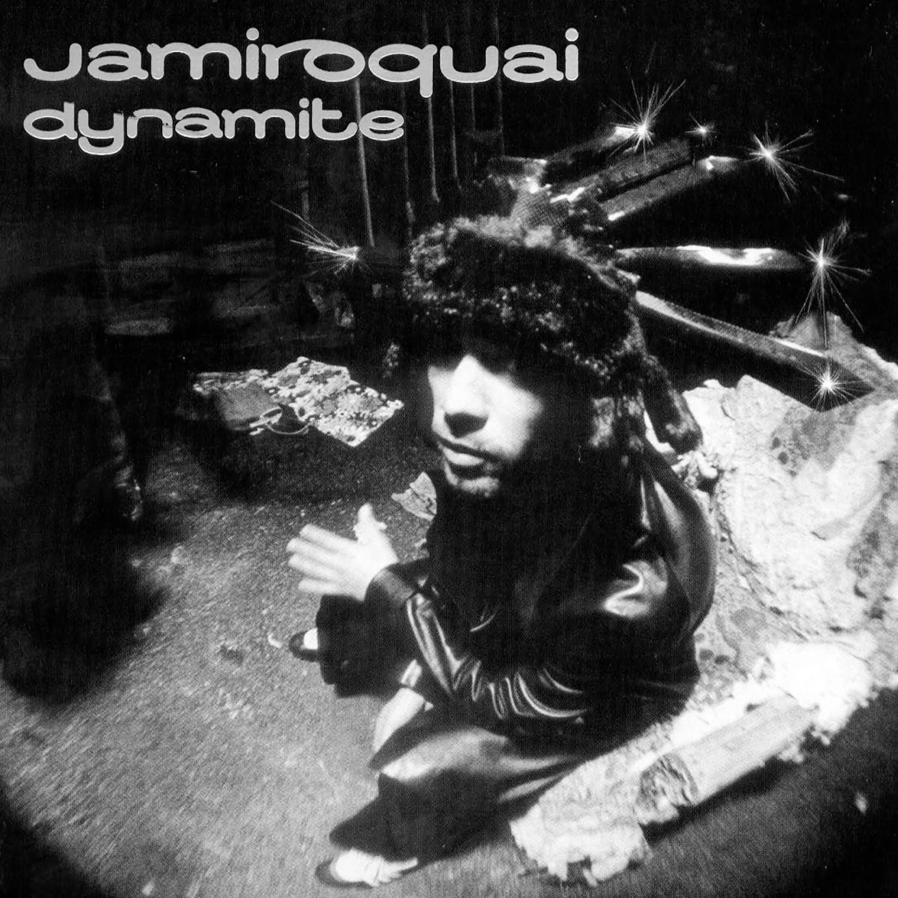
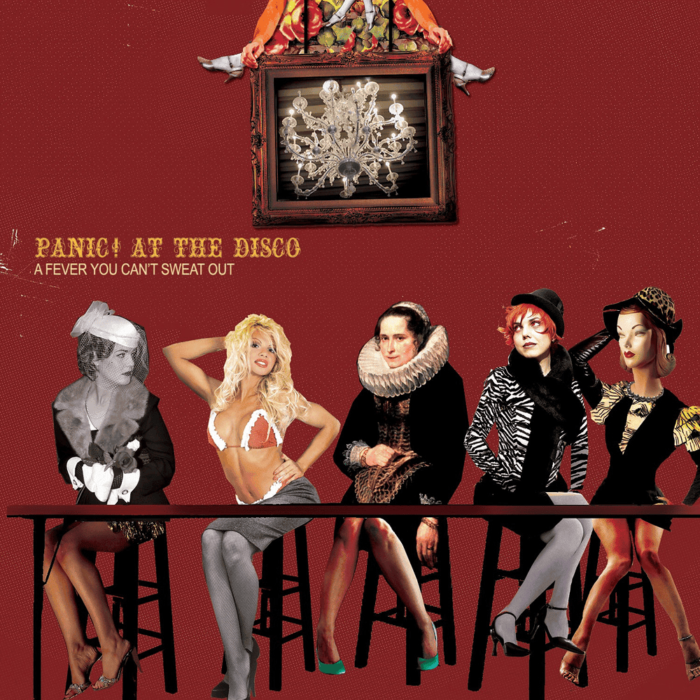
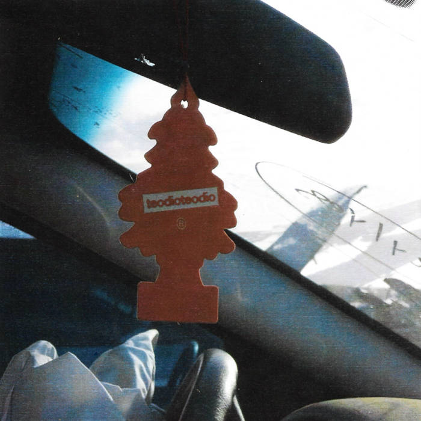
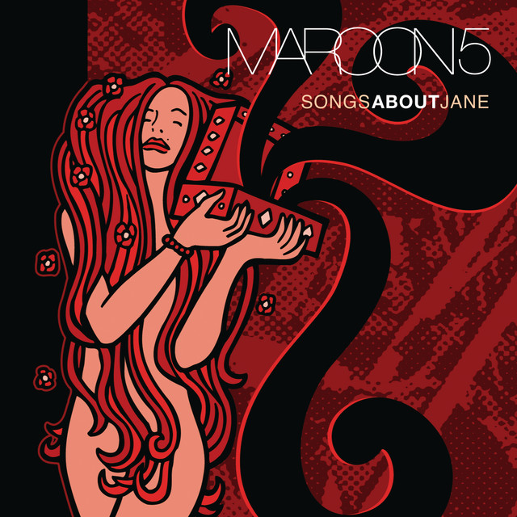

Album Reviews
Here are some of my favorite albums, and my thoughts on them! in order of most recently reviewed, top to bottom:3
Scrollable btw!
"Dynamite" by Jamiroquai

Listen here: Spotify - YouTube music
If you all wanna talk about an album that has a fucking amazing introductory song, it's this one with Feels just like it should, Jamiroquai is in my top 5 favorite bands, i tried to choose between Emergency on Planet Earth, The Return of the Space Cowboy and this album and holy shit it was NOT an easy choice, but songs like Tallulah, Seven Days in Sunny June and Hot Tequila Brown are some of the funkiest-acidiest-jazziest songs i've had the pleasure to listen to, this album is certainly a recommendation for anyone that wants to dance a little bit or just you know, have fun with it. 8/10.
"A fever you can't sweat out" by Panic! At The Disco

Listen here: Spotify - YouTube music
In my opinion the best album p!atd has, tied with death of a bachelor and vices & virtues of course, but STILL, is not a 10/10, it has some songs that aren't (in my opinion) not that great,Intermission is a skip in my house, and Build God, Then We'll Talk is a song that i don't really like, but the rest of the album can be pretty great, The only difference between martyrdom and suicide is press coverage, Camisado and Lying is the most fun a girl can have without taking her clothes off are some of the best tracks in here, overall a pretty good listen and a pretty good singing experience if i may add. 7/10.
Favorite track: The only difference between martyrdom and suicide is press coverage
"Echaremos el cielo abajo a patadas" by teodioteodio

Listen here: Spotify - YouTube music
Another one i got to hear in my travels through the chilean music scene. This one didn't get to me as much as Deseo, Carne y Voluntad, but regardless, it has some freaking bangers in there, Lejos de méxico is probably the most popular track right now, and oh my god, i don't have a lot of words to describe it (and it's the same for the whole album) other than "powerful", it's a pretty good listen. 7.5/10.
Favorite track: Amar
"Deseo, Carne y Voluntad " by Candelabro

Listen here: Spotify - YouTube music
This was recommended by a friend of mine, and I'm glad they did! I used to have a lot of prejuice against music from my own country and in my own mother language, but this album (and a few others i'll mention here) has given me a new perspective on how to listen to music, i already had music as a primary way to enjoy and listen to human experiences, emotions and stories that each one of us has inside, but hearing this, hearing Fracaso, Pecado, Tumba and some other tracks, left me speechless. An actual 10/10.
Favorite track: Fracaso
"Songs about Jane" by Maroon 5

Listen here: Spotify - YouTube music
There's tragic in your first album being the peak of your career, this is one of those albums that doesn't really have bad songs, every one of them is a fucking good listen, and it's a pretty good view to a "what could have been" if they didn't sell their sound to something super comercial and bland. 9/10
Favorite track: Sweetest Goodbye
"Vessel" by twenty one pilots

Listen here: Spotify - YouTube music
I really can't give an honest review on this album, after all it's my favourite album of my favourite band, twenty one pilots saved me more times than i'm proud of, i don't know if i'd be here if it wasn't for their music, this album is one of those experiences i'll never forget, never. Thank you twenty one pilots. infinite/10
Favorite track: Screen
"Funkybaritico Hedónico Fantástico" by Chancho en Piedra

Listen here: Spotify - YouTube music
This one is actually not my favourite album of theirs, but i can't negate the infinite times i've sang and yelled some of the funky ass songs that are in here, muh weno. 7/10.
Favorite track: Mi mejor momento